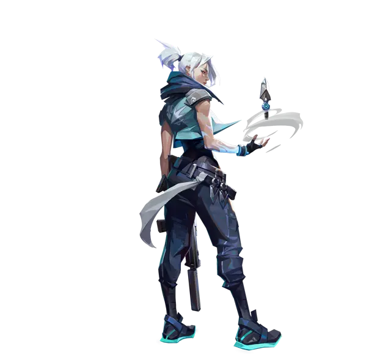
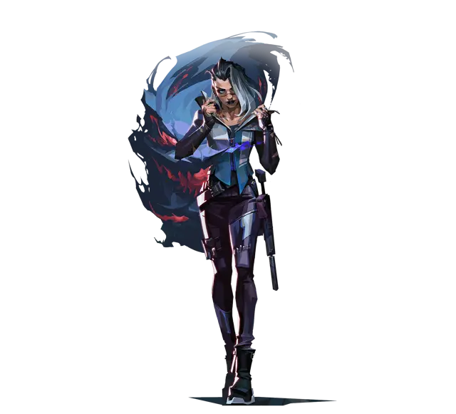

Aprende a jugar,
sin que te boosteen
Lo que aprendí llegando a Inmortal y en la academia, ordenado para que lo vayamos viendo juntos en Discord. Cada tema tiene su página: lo vemos en la juntada, lo practicamos en la custom y aquí lo repasas cuando quieras.
Si no estás bien de aim, ganar ventajas con estrategia y habilidades es tan importante como el aim.
Esto me lo vas a escuchar mucho. Los timings y las rotaciones también ganan rondas.Para el grupo
Gente entre Bronce y Oro que quiere subir de verdad. Todo se practica dentro del juego: Range, DM, TDM, custom y ranked. Como casi todos juegan humo o Sage, los ejemplos van a salir de ahí.
 Omen
Omen
 Brimstone
Brimstone
 Astra
Astra
 Viper
Viper
 Clove
Clove
 Sage
Sage
Cómo son
Las customs que jugamos, con la guía y el tema directo a la práctica.
Repaso
¿Cómo te fue en la semana?
Explicación
Un tema, cortito
Práctica en la custom
Primero el ejercicio, después juego libre con lo del día
Preguntas
Lo que quieras
Para la semana
Algo concreto para practicar
Tres niveles
Primero mejoras tú. Si después arman equipo para Premier, ya van a tener la base para jugar juntos.
Bronce → Plata
Ajustes y calentamiento
Sens, mira, video y cómo calentar antes de ranked.
Disponible 1.2Crosshair placement
En el suelo no hay monedas: la mira, a la altura de la cabeza.
Disponible 1.3Movimiento y disparo
A-D siempre, no agacharse y tap primero.
Disponible 1.4Peeks y ángulos
¿Info o duelo? Habilidad primero, y off-angles.
Disponible 1.5Utilidad básica
Para qué sirve cada habilidad, cuándo sí y cuándo no.
Disponible 1.6Comunicación y mental
Qué decir, la regla del clutch y que los nervios no te ganen.
Disponible 1.7Economía básica
O compramos todos, o ahorramos todos.
Disponible 1.8Mental y cuándo parar
El límite de derrotas y tu rutina antes de jugar.
DisponiblePlata → Platino
Trades y spacing
Lado a lado con tu compa y cobrar cada muerte.
Disponible 2.2Información y sonido
Minimapa, pasos y contar enemigos.
Disponible 2.3Leer al rival y timings
Tabular, chalecos, patrones y timings.
Disponible 2.4Rotaciones en defensa
Cuándo caminar, cuándo correr y quién cuida al lurker.
Disponible 2.5Ataque y el default
Descontar, sacar info y entrar donde hay ventaja.
Disponible 2.6Post-plant y retake
Cruzados y al tiempo; retake todos juntos.
Disponible 2.7Posicionamiento defensivo
Off-angles, cruzados y reposicionarse.
Disponible 2.8Revisar tu partida
La replay: tu mira, tu movimiento y tus decisiones.
DisponibleEn equipo
Roles y composición
Qué aporta cada rol y una comp base para ranked.
Disponible 3.2Defaults y ejecuciones
Un plan de ataque que todos entiendan.
Disponible 3.3Setups defensivos
Setup base y variantes.
Disponible 3.4Retakes coordinados
Utilidad y timings para volver a entrar.
Disponible 3.5Economía de equipo
Anti-eco, anti-force y compras.
Disponible 3.6IGL y mid-round
Llamar la ronda y adaptarse.
Disponible 3.7Preparar un partido
Estudiar al rival de Premier.
Disponible 3.8Scrim y revisión
Jugar, revisar y corregir.
DisponibleCómo jugar cada rol
Cada rol tiene un trabajo en la ronda. Toca uno para ver qué hace y cuándo le toca. Cada rol tiene su página: toca "Cómo jugar" en el que abras.

1DuelistaAbre el espacio. Entra primero al site y gana el espacio. Mueve la mira del rival para que entren los demás. Cuándo: En la entrada, apenas cae la utilidad.Cómo jugar duelista
2IniciadorSaca la info o gana el primer duelo. Dron, flecha, flash o stun antes de que entre el duelista. Guarda lo que no se recarga para el mid-round. Cuándo: Antes de cada entrada y cuando el equipo no sabe dónde están.Cómo jugar iniciador 3ControladorPone los humos. Corta visión para entrar o para aguantar. Que sea el último en morir: un humo en la spike gana rondas. Cuándo: Al empezar la entrada y en el post-plant.Cómo jugar controlador
3ControladorPone los humos. Corta visión para entrar o para aguantar. Que sea el último en morir: un humo en la spike gana rondas. Cuándo: Al empezar la entrada y en el post-plant.Cómo jugar controlador 4CentinelaCuida el flanco. Cuida al lurker, corta rotaciones y gana timings. Si van los 5 en rush, no debe morir primero. Cuándo: Toda la ronda: el flanco, la espalda y el retake.Cómo jugar centinela
4CentinelaCuida el flanco. Cuida al lurker, corta rotaciones y gana timings. Si van los 5 en rush, no debe morir primero. Cuándo: Toda la ronda: el flanco, la espalda y el retake.Cómo jugar centinelaLos tipos de cada rol, los agentes y la comp base están en el tema 3.1.
Lo importante de cada mapa
Qué zonas mandan, qué info no puedes perder en cada site y cuándo conviene retakear. Estos son los 7 de la pool actual (Act 6).

Summit
Mapa nuevo de 2 sites y 3 líneas. Lo que lo cambia todo son las 3 paredes que se pueden tirar.
Ver el mapa
Corrode
2 sites, 3 líneas y un mid que decide casi todo. Volvió en la 13.08 con cambios importantes.
Ver el mapa

Haven
3 sites (A, B y C). Al defensor le toca cubrir más terreno, y eso es lo que hay que aprovechar.
Ver el mapa
Lotus
3 sites, puertas giratorias y una pared que se rompe. Hay mucho ruido: úsalo como info.
Ver el mapa

Abyss
Los bordes no tienen pared: si te caes, te mueres. Mucha altura y líneas largas.
Ver el mapa¿Cómo pasas de nivel?
No es jugar por jugar. Tienes que cumplir tres cosas.
DM y TDM con foco
Cada partida tiene algo en lo que fijarte. Si juegas por jugar, no cuenta.
Anota cómo te fue
Después de cada sesión, anota con sinceridad cómo te fue. Y guarda una captura de tu historial por semana para ver cómo vas mejorando.
Prueba en la custom
Lo haces delante mío. Si sale, pasas.
Para tener a mano
Lo que sirve en todos los temas.
Glosario
Peek, trade, lurk, KAST… cada palabra en una línea.
Abrir ▶Videos por tema
Los mejores videos de pros y coaches para cada tema, primero en español.
Abrir 💨Guía de humos
Para qué sirve cada humo, cómo ponerlo y cuándo tirarlo.
Abrir 800Compra en pistola
Qué comprar en la primera ronda con cada agente.
Abrir %Tu tracker
Cómo leer tus números y si suman a ganar rondas.
Abrir